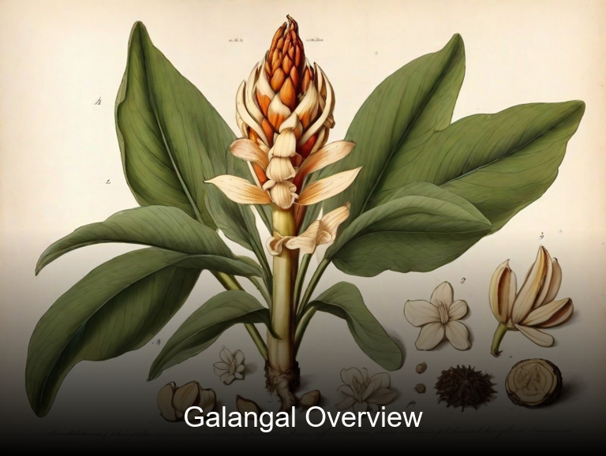
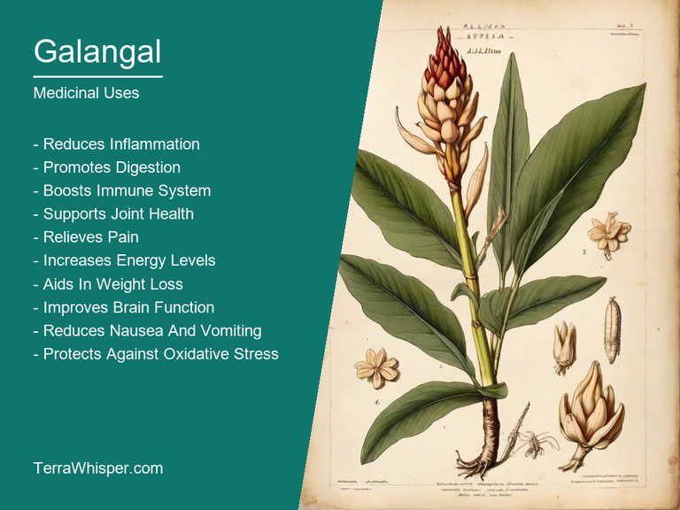
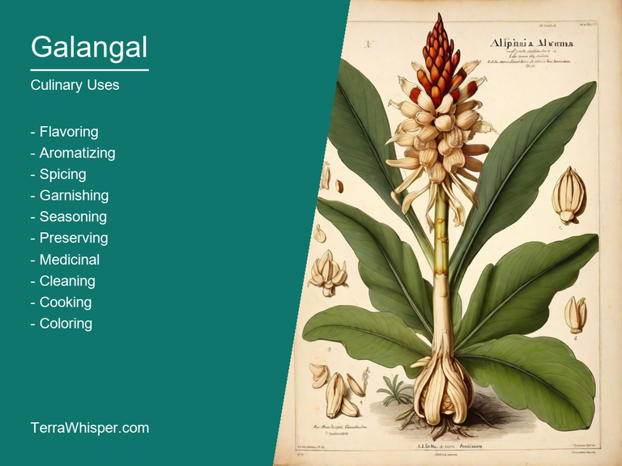
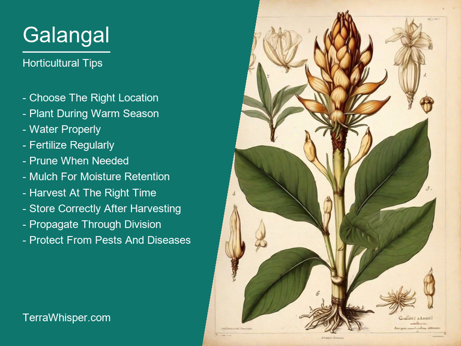
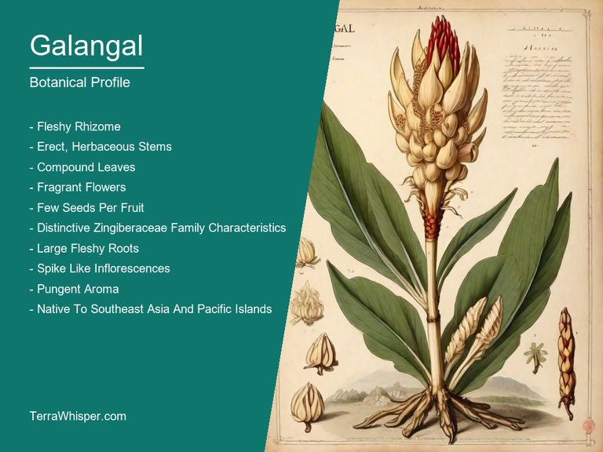
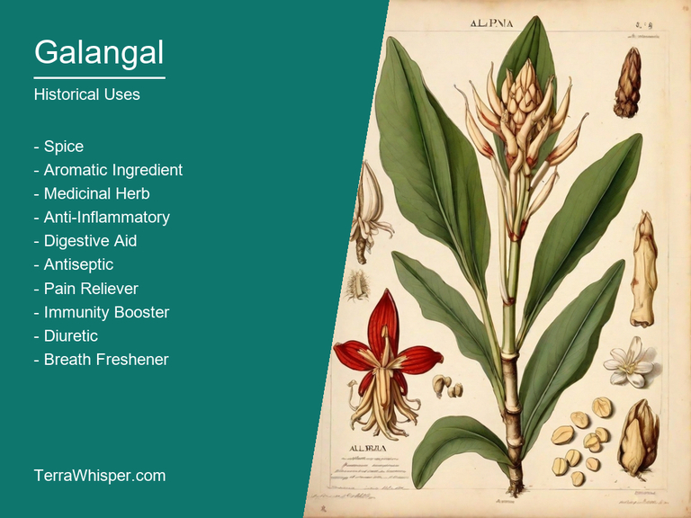

Galangal, scientifically known as Alpinia officinarum, is a versatile plant with both medicinal and culinary properties. This aromatic root, also referred to as Thai ginger or Siamese ginger, has been used for centuries in traditional medicine to treat various ailments, including digestive issues, respiratory infections, and inflammation. In the kitchen, galangal imparts an earthy, warm, and slightly spicy flavor that complements many dishes, particularly those from Southeast Asian cuisine. It's often used in soups, curries, and stir-fries to add depth and complexity to the taste profile.
Galangal is a handsome ornamental addition to gardens with its lush foliage and striking flowers. Its thick, rhizomatous roots make it a hardy plant that can thrive in various soil types and climates, especially those with warm temperatures and high humidity. The bright green leaves of galangal form an attractive rosette, while the elegant flowers display delicate white or purple hues on top of dark stems. These features make it an eye-catching plant for both indoor and outdoor gardens, adding visual interest to any landscape design.
Galangal has a rich botanical history that dates back thousands of years. Ancient civilizations such as the Chinese and Egyptians used this plant in their traditional medicine practices. Its medicinal properties were well-documented in ancient texts like the Ebers Papyrus, which dates back to around 1500 BCE. Over time, galangal found its way into European herbalism, where it was commonly prescribed for digestive and respiratory issues. In contemporary times, galangal continues to be an essential ingredient in various traditional medicines worldwide due to its unique pharmacological properties.
In this article, you will discover what are the medicinal and culinary uses of galangal. Then, you'll learn how to cultivate it, what is its botanical profile, and how it was used historically.
Galangal (Alpinia officinarum) is a medicinal plant that has been used for centuries in traditional Chinese and Indian medicine. It has numerous health benefits and medicinal properties, including anti-inflammatory, antimicrobial, antifungal, and anti-parasitic effects. This herb also supports digestion, improves circulation, and boosts the immune system. Additionally, it's believed to help with conditions such as arthritis, gastrointestinal disorders, respiratory infections, and skin problems.
The following illustration lists the most important uses of galangal in medicine.

The medicinal constituents of galangal include several compounds that contribute to its therapeutic effects. These include alkaloids, terpenes, flavonoids, and polysaccharides. One of the most active compounds is galangin, which has anti-inflammatory and antioxidant properties. Other notable constituents include gingerols, shogaols, and eleutheroside B, all of which have antimicrobial and antifungal activities.
The most commonly used parts of galangal are the rhizomes (underground stems) and roots. These can be consumed raw or cooked, or used to make teas, decoctions, or tinctures. Dried or powdered forms of galangal are also available. Medicinal preparations may include capsules, tablets, or powders. It's important to note that not all forms of galangal are equal in potency or effectiveness, and proper dosing should be considered for optimal results.
While galangal is generally considered safe, there are some potential side effects to be aware of. These can include nausea, dizziness, abdominal pain, and skin irritation. Some individuals may also experience allergic reactions to galangal. Additionally, pregnant women and those with certain medical conditions should consult their healthcare provider before using galangal, as it may interact with medications or increase the risk of complications.
To ensure safe and effective use of galangal, it's important to follow proper dosing guidelines and avoid overconsumption. The recommended daily dose for adults is between 1-3 grams of dried rhizome, divided into two or three doses throughout the day. It's also crucial to choose high-quality galangal supplements from reputable brands. Lastly, always consult with a healthcare professional before using any new herbal remedies, especially if you have pre-existing health conditions or are taking medications.
Galangal is a versatile spice that has been used in Southeast Asian cuisine for centuries. It is commonly used to flavor dishes such as curries, soups, and stir-fries. Galangal can also be used as a marinade or spice rub for meat and seafood. Its pungent aroma and distinctive taste make it an essential ingredient in many dishes.
The following illustration lists the most common uses of galangal for culinary purposes.

Galangal has a complex flavor profile that is difficult to describe. It is often described as having a peppery, slightly sweet, and slightly bitter taste. The exact flavor of galangal can vary depending on the variety and preparation method used. It is important to note that galangal should be used sparingly in recipes, as it can overpower other flavors if used too much.
The edible parts of galangal include the root, rhizomes, and leaves. The root is the most commonly used part of galangal and is typically peeled and grated or chopped into small pieces before being added to dishes. The leaves of galangal can also be used in cooking, but they are less common than the root. Galangal should be used fresh for best results, as it loses its flavor and potency over time.
When using galangal in cooking, it is important to take into account its strong aroma and taste. It is recommended to start with a small amount of galangal and add more to taste. Galangal should also be used carefully when marinating or spice rubbing meat and seafood, as it can cause the food to become too spicy if overused. Additionally, galangal should not be used by pregnant women or those with a history of miscarriage, as it may increase the risk of bleeding.
While galangal is generally considered safe for consumption, there are some potential side effects and toxicity to be aware of. In large amounts, galangal can cause upset stomach, diarrhea, and headaches. It may also interact with certain medications, such as blood thinners and anti-inflammatory drugs, so it is important to consult a healthcare professional before using galangal if you have any pre-existing medical conditions. Finally, galangal should not be ingested raw, as it can contain small amounts of toxic compounds that may cause illness if consumed in large quantities.
Galangal (Alpinia officinarum) is a perennial herb that grows to a height of 2-4 feet and has a spread of 3-5 feet. It prefers full sun to partial shade and well-drained soil with a pH of 6.0-7.0. The best way to propagate galangal is by division or cutting from the rhizome. To grow galangal, plant the cuttings in a pot filled with well-draining soil. Keep the soil moist until the seedlings emerge. Once established, galangal can be transplanted to the ground.
The following illustration lists the most important tips to cutlitvate galangal.

Galangal prefers warm temperatures and high humidity. It thrives in temperatures between 70-85°F (21-29°C) and requires consistent moisture during growth. The ideal growing conditions for galangal are full sun to partial shade with well-drained soil that is rich in organic matter. Galangal needs a minimum of 6 hours of sunlight per day to grow properly.
To maintain galangal, it's important to keep the soil consistently moist throughout its entire growing season. The plant should be fertilized every 4-6 weeks with an organic fertilizer or compost. Galangal can be pruned back to promote bushier growth and prevent it from becoming too woody. To harvest galangal, wait until the leaves turn yellow and the root has reached maturity. Once harvested, the root should be peeled, and the outer skin discarded.
The botanical name for galangal is Alpinia officinarum. It belongs to the kingdom Plantae, phylum Tracheophyta, class Magnoliopsida, order Zingiberales, family Zingiberaceae, genus Alpinia, and species officinarum. The common names include ginger, Chinese ginger, galangal root, and knotted ginger.
The following illustration display the botanical profile of galangal.

Galangal is a perennial herb that grows up to 1.5 meters tall. It has fleshy rhizomes that grow underground and produce thick, tubular stems that branch into a rosette of lance-shaped leaves. The leaves are dark green with purple veins, and the flowers are yellow and occur on a spadix that is surrounded by bracts. Galangal has a distinctive aroma and taste due to its high content of volatile oils, including galangol and shogaol.
There are several variants of galangal, including Alpinia galanga, Alpinia tenuissima, and Alpinia pumila. These variants differ in their morphology, with A. galanga having long, thin rhizomes and a more elongated stem, A. tenuissima having thin, delicate leaves, and A. pumila having smaller, more compact plants.
Galangal is native to Southeast Asia, where it is widely used in traditional medicine and cuisine. It is also cultivated in other parts of the world, including India, China, Japan, and the United States. Galangal thrives in warm, humid environments and requires well-drained soil.
Galangal has a typical biennial life cycle, with flowering occurring after two years of growth. The plant produces a large number of seeds that are dispersed by birds and other animals. The seeds germinate in the soil and develop into small shoots that grow up to form the mature plant. Galangal is a self-pollinating plant, with the flowers producing pollen that fertilizes the ovules on the same or neighboring plants.
Galangal, scientifically known as Alpinia officinarum, has a rich and storied history in traditional medicine. It is believed to have originated in Southeast Asia and was used extensively by indigenous cultures for thousands of years before being discovered by Western medicine. In Ayurvedic and Traditional Chinese Medicine (TCM), galangal is known for its anti-inflammatory, antispasmodic, and digestive properties, making it a popular remedy for conditions such as gastrointestinal problems, rheumatism, and menstrual cramps. Its strong aroma and distinctive taste make it an easy ingredient to identify and use in traditional recipes.
The following illustration lists the most well known historical uses of galangal.

In addition to its medicinal uses, galangal also played a significant role in divination and spiritual practices throughout history. In many cultures, the root of the galangal plant was believed to possess mystical properties that allowed it to communicate with the spirits or gods. This led to the use of galangal in rituals and ceremonies aimed at seeking guidance or communication from the divine. For example, in Hinduism, galangal is considered one of the sacred herbs used in Vedic offerings to the gods. Similarly, in ancient Egypt, galangal was believed to have protective properties and was often found buried with the dead to ward off evil spirits.
Galangal also has a rich cultural history that is steeped in legends and myths. In many cultures, it is associated with strength, courage, and protection. For example, in Hindu mythology, galangal is believed to have been given to Lord Shiva by the goddess Parvati to aid him in his battle against demons. Similarly, in Native American culture, galangal was used as a symbol of protection and was often worn as a talisman by warriors. In many regions of the world, galangal is also associated with good luck and prosperity, making it a popular ingredient in traditional festive dishes and drinks. Overall, galangal's rich history and diverse uses make it an important part of many cultures throughout history.